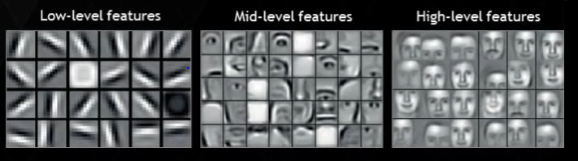
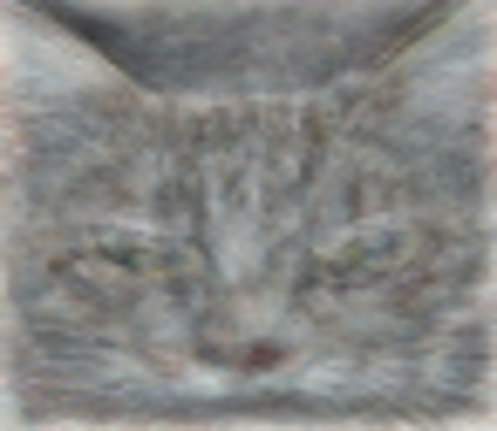
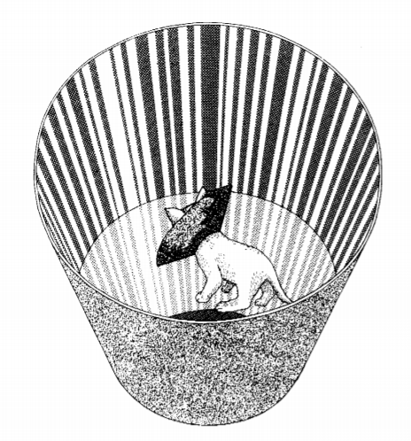
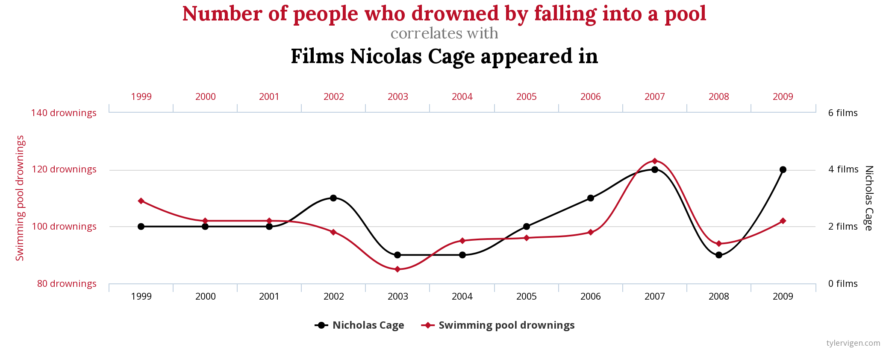
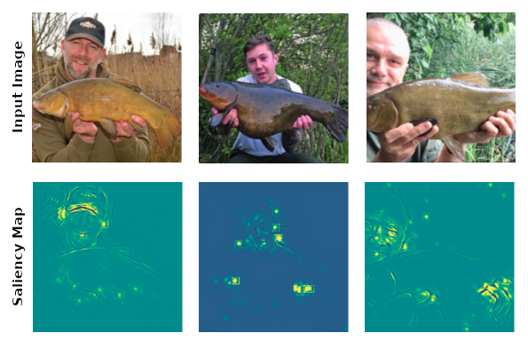
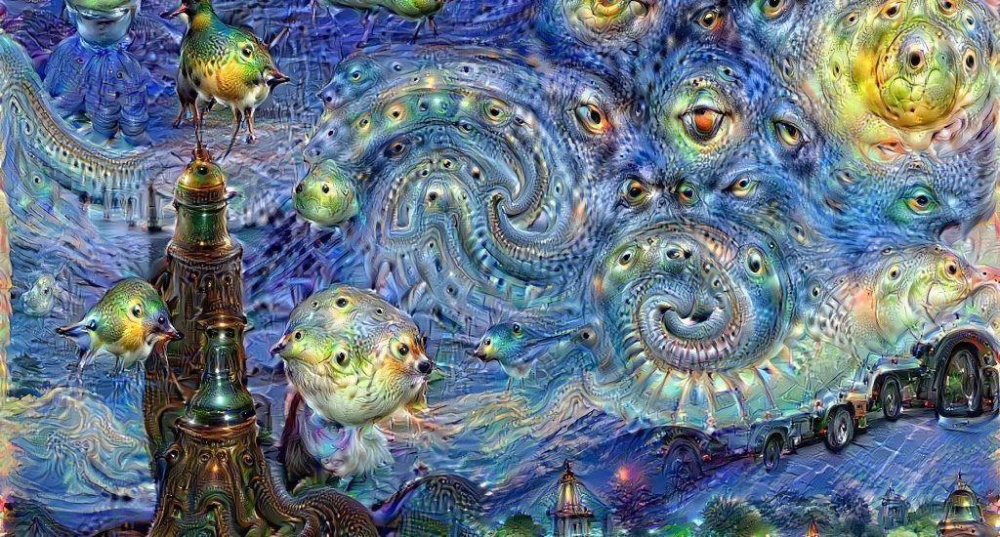

(Original draft: Jun 28, 2020)
“Faced with information overload, we have no alternative but pattern-recognition”
–Marshall McLuhan [1]
(excerpt from book on classification, in progress)
1 Intro
In the preceding material, we’ve brought readers up to speed on the idea that classification (i.e., grouping animals, concepts, events, or people together based on similar features) is something that humans just do, even to the extent that from antiquity until the 19th century, despite many forms of classification being created and debated, the fact that we tend to categorize at all went largely unexamined. We’ve explored that categories and concepts are tied up with language (because “something something Wittgenstein” [2]) and that thinking about certain categories tends to activate particular regions of people’s brains (e.g., as shown in the amazing 3D web demo for Huth et al.’s “PrAGMATIC Atlas” [3], [4]).
When we classify or categorize (and we use these terms interchangeably), it is done as a means of simplifying and adding structure to the world — in the words of psychologist Eleanor Rosch, “to provide maximum information with the least cognitive effort” so that “the perceived world comes as structured information rather than as arbitrary or unpredictable attributes” [5]. This amounts to filtering the variability present in the world in order to retain the essence of what’s important. This has been described via the metaphor of an “information bottleneck” [6] yet the mechanism of how the bottleneck is able to be selective in a useful way that gives rise to structures beyond the mere exclusion of noise, merits careful attention. When we classify, we are noticing and identifying patterns, thus performing pattern recognition. It is no coincidence that the neural structures in biological brains, as well as artificial neural networks, tend to be adept recognizers of patterns. How do they work?
Let’s consider pattern recognition in greater detail, starting with visual patterns. Modern machine learning classification research has devoted exorbitant time and resources to the problem of image classification, and the most successful and prevalent image classifiers rely on convolutional neural networks (CNN) which apply successive filtering operations to an image, in so doing learning to recognize patterns in the images in their datasets. These networks are based explicitly on detailed studies of the visual cortexes of mammals, specifically cats [7]. More on the cats later.
Usually we explain convolution by saying that, for each pixel in the image (where each pixel consists of a numerical value for its intensity), we take a weighted sum over its neighboring pixels, and generate a new image consisting of all the weighted sums. For example if we used each pixel’s immediate neighbors, including the “diagonal-neighbors,” then we’d have a 3x3 matrix of “weights” which encode how much each pixel in the filter’s “receptive field” contributes weighted sum. This matrix of weights is called the convolution kernel and performs the work of a filter. Using convolution for image processing is something familiar to users of Photoshop, or image-intensive professions such as astronomy or medical imaging. One familiar example is the running average, in which all the weights are the same; this has the effect of filtering out high frequency features such as noise, and allowing the smoother parts of the image through. Other choices for weights can produce effects such as edge-detection, which is apropos to our ensuing discussion. We can view classification as the final stage of filtering, in which the entire input signal is reduced to a single point, namely the category in which the input belongs.
There’s an alternative way to think of convolution that yields more insight for our topic of classification, and it’s directly related to pattern matching: convolution is essentially the same thing as (cross-)correlation. In this case we view the weights matrix as a tiny image, and the output of the filter operation is a measure of the strength of the correlation between (each small region of) the input image and the kernel-image. This correlation process produces large outputs wherever part of the image matches the kernel, and similarly where they don’t match, the output is attenuated. (I’m oversimplifying a bit, but this is close enough.)
2 Interactive Demo: If the Shape Fits Pass It
In the interactive demo below, we see an image containing some lines, a circle, and various textures. By editing the values of the weights in the convolution operation’s filter kernel, you can allow different parts of — i.e., different patterns in — the image to ‘activate.’ These activations (i.e., filtered images) would then ‘be allowed to pass through’ to subsequent layers in a neural network, where they could then be used for the formation of higher-order representations and features.
Try editing the weights in the filter kernel matrix below by selecting from the drop-down presets and/or clicking the ‘squares’ to turn them on or off, and try to allow different parts of the image through, such as horizontal or vertical lines. (The default kernel is designed to match with diagonal lines that go from lower left to upper right.)
(As for the texture patterns toward the bottom, we’ll say more about them later.)
Through this exercise, we can infer that what is usually allowed through the filter is what fits or matches the shape stored in the kernel. In ML, we tend to call kernels feature detectors, because by allowing certain features to pass rather than blocking them, the filters present them to the remainder of the network. Feature detectors can be arranged in succession, so for example, if you want to ‘detect’ the large circle, you might combine the outputs from feature detectors for horizontal lines, vertical lines, diagonal lines, etc. Or if you want to detect faces, you can feed the edge-detectors into a hierarchical set of levels that aggregate increasing higher-level features like eyes and noses, as shown in this ‘ubiquitous’ image from Lee et al in 2009 [8]:

As we mentioned earlier, convolutional filters are used in all kinds of fields, from astronomy to medicine to the selfies you take with you phone, and appear in apps such as Photoshop, SnapChat and Instagram. In our present discussion we are not so much interested in the filtered image as an artistic or scientific product as we are in which features make it into the output image — which features are “passed” if you will — and which are suppressed, because this will determine what sorts of information can propagate to ‘downstream’ parts of the network and ultimately determine the classification output. In the example of the facial features above, imagine if you couldn’t detect horizontal lines: would you even be able to detect faces at all?
Ultimately, when the high-level features generate classifications, we can view the classification as the final filter, in which the entire input signal is collapsed into one point. Examples of this include the discovery of the “Jennifer Anniston neuron” a single neuron in humans that will only fire when presented with an image of the actress [9] or Google Brain’s “Cat” image of Quoc Le et al [10], which demonstrates the combined effect of inputs resulting in the classification “cat” by team’s neural network:

3 Learning to See
Speaking of cats! Like the interactive exercise above illustrated, the Nobel-prize-winning work of David Hubel and Torsten Wiesel in the 1960s showed that individual neurons in cat brains will respond to certain visual stimuli such as diagonal, horizontal, or vertical lines. Even more interesting is how and when such feature detectors are developed — or not. Hubel and Wiesel found that there is a “critical period” of “neuroplasticity” in the early lives of cats during which their visual cortexes can ‘learn’ to acquire their feature-detecting ability. Several years later, Colin Blakemore and Grahame Cooper showed [11] [12] that kittens raised in darkness but occasionally placed in an environment consisting of only horizontal lines never acquired the ability to detect vertical lines, and likewise that allowing them to see only vertical lines kept them from developing feature detectors for horizontal lines. In the later case, the kittens could not detect the edge of a tabletop visually and relied on touch to navigate.

The kittens raised in the presence of horizontal lines could “see” the vertical features in their surroundings, in the sense that the light from such objects was hitting the photoreceptors in their eyes, but couldn’t “see” them in the sense of detecting or noticing them because they didn’t have sensors for them — they were insensitive to them. When you are insensitive to something, you don’t believe it’s there. But when your neurons encode a pattern acquired by experience, then you start to notice features in your environment that you were otherwise oblivious to.
The takeaway from this is that if you don’t have (or develop) feature detectors for something, then you can’t notice it, or reason about it, etc.
This has many implications, one of the most widely discussed currently being racial bias in computer vision systems, and by “bias” we mean “completely not working at all.” This can be as simple as an automated hand dryer in a bathroom not turning on when a Black person puts his hand under it, to AI researcher Joy Buolamwini’s demonstrations — in the aptly-titled “Algorithms Aren’t Racist. Your Skin is Just Too Dark” [13] — that because of her dark skin, facial recognition systems treat her as “invisible.” This lack of detection amounts to misclassification by treating a relevant foreground object as if it were part of the background. (See the later chapter on Misclassification.)
When humans are detecting things, we may not notice them as a result of not having experienced them. Thus for example, a person who has not experienced certain forms of abuse may not recognize patterns of behavior that are triggering for those have experienced them. Thus we may deny the existence of certain dynamics because we don’t see them, or don’t see them in the same light as others. The neurological basis for this, and indeed for pattern matching and learning in general, is known as Hebbian learning. Broadly speaking, when neurons fire in response to certain stimuli, they also lower their activation thresholds so they are more likely to fire for the same stimuli in the future — as the saying goes, “neurons that fire together, wire together.” So in order to recognize things, we must have experienced them, and once we’ve experienced them, we’re more likely to ‘see’ them in the future.
The preceding section could be summarized as “you’ve got to got it, to spot it,” which is a corollary of a more famous phrase…
4 You Spot It, You Got It
As we’ve said, the filtered stimuli that are allowed to pass into our pattern-matching apparatus can ultimately lead to classifications as conclusions. For example, people shown the same facts will draw completely different conclusions, depending on their pre-existing biases; this is particularly challenging for when this is applied to politics, as in “Conservative and liberal attitudes drive polarized neural responses to political content” [14].
The earlier example of convolutional image filters established a link with correlation, showing we often detect things on the basis of correlations. This applies not only visually, but for time-series signals as well. Essentially, the correlation process will produce an output that is either amplified or attenuated by the strength of the correlation, as with a “low pass filter” in audio production, and then this may be passed along to other systems such as (following the audio metaphor) a noise gate, which rejects signals with strengths below a certain threshold. We’ll have a much deeper discussion of thresholding phenomena later, but for now, it suffices to say that this is an immensely important form of classification. The most sensitive scientific instrument ever made, the LIGO gravitational wave detector system, measures time series data about the infinitesimal changes in length of a pair of laser beams — changes as small as 1 part in 1021. Yet this sensitivity comes with cost that the detector highly sensitive to noise as well. In order to pick out the true signals from the background of noise, researchers apply pattern-matching filters, and to great effect: Three leaders of the LIGO Scientific Collaboration received the Nobel Prize in Physics in 2016, for the successful detection of gravitational wave signals from distant colliding black holes. My work as a postdoctoral researcher involved simulating colliding black holes for the purpose of providing “template waveforms,” probable signals (used like the kernels above) that experimenters running the LIGO detectors could use as patterns to search for. In the next interactive demo (below), you can try different template signals to try to match or filter different parts of the inputs.
5 Interactive Demo: Similar Signals
In this example, the Input (blue) and Filter (purple) signals are combined in two different ways. The first way is shown in the bar at the right, which is the correlation coefficient (“R”) showing how well the two signals match. (This “Pearson product-moment correlation coefficient” is exactly the same as the “cosine similarity” measure used in fields such as Natural Language Processing, and is simply a normalized “dot product” between the two signals, i.e., the weighted sum of the Input elements using their respective Filter elements as weights — or vice versa, it’s symmetric! — then divided by the magnitudes of both signals.) When the input matches with filter, the two can be said to correlate or even resonate, resulting in a strong detection of the signal. The second way is one in which the Filter is used like a convolution kernel to produce a “cross-correlation” filtered Output (shown as the red graph).
A key observation from the demo is that the correlation measure “R” is high when Input (i.e., new data) and Filter (i.e., the stored pattern) seem to match up. The filter also determines what part of the input is passed (if any) and how the input is transformed when it gets passed.
Correlation is not a guarantee of proper detection, but it works well enough that it serves as a go-to response. The old adage “correlation does not imply causality” exists for two main reasons. The first is precisely because our ability to recognize aspects of the work relies, neurologically, on correlation as a means of filtering and making sense of the world. The second reason is that many different phenomena can appear to correlate. One of my favorite websites (and books) is Tyler Vigen’s “Spurious Correlations” [15], which shows all manner of yearly data that are highly correlated despite being utterly ridiculous, such as showing how “Age of Miss America” correlates with “Murders by steam, hot vapors and hot objects” or as shown below, “Number of people who drowned by falling into a pool” vs. “[Number of] Films Nicolas Cage appeared in.”

We’re well acquainted with spurious correlations in the visual domain as well, such as the common practice of seeing animal shapes in clouds [16] or Jesus in a piece of toast [17]. Since one of the themes of this book is investigating similarities and differences between how humans and machines classify things, we might ask the question, “Do computer vision systems see things in other things?” The answer is: All the time.
6 What Do Computer Vision Classifiers ‘See’?
There are numerous methods intended to help people determine which inputs (or parts of inputs) are significant — or “salient” — for classification outcomes, so they can better understand how the networks operate.
Often the salient features are not the same as those humans typically rely on. In the computer vision community there is an apocryphal story told about a US Army software system designed to detect tanks in photographs. The story goes that a series of photographs were taken of scenes containing tanks or not, and the AI system was trained to be a binary classifier (i.e. “tank” or “no tank”) and it performed extremely accurately. Then someone noticed that all the photos containing tanks were taken on cloudy days, and the non-tank photos were taken on sunny days (or in some tellings these are reversed); the developers had trained a cloudy-day detector, not a tank detector! In cases like this, one might say that the AI system was ‘cheating,’ but this is an anthropomorphism; a better description would be that it was latching on to any pattern sufficient to produce the desired outcome, resulting in a spurious correlation. (Incidentally, I believe the story to be true, because it was told to me when I was working for the US Army at Fort Belvoir in my first full-time job after college, on a project specifically intended to generate simulated images of tanks in various natural scenarios with extra-realistic trees [18], in both optical and thermal bands.) Similar examples abound, such as tendency for models trained on the ImageNet database to identify the trophy fish known as a “tench” solely based on the presence of human fingertips along the underside of the fish — because all the training images of tenches were taken of fishermen proudly holding their catches [19]. We can see this by making saliency map that shows you which parts of the image were most ‘important’ for producing a given classification output. Here are saliency maps for a few pictures of tenches found on the internet, run through a popular deep learning image classifier, in which we see that the fish is almost “invisible” compared to the fishermen’s salient (bright yellow) features:

There are several methods for producing saliency maps (see, e.g. [20]), so they don’t always look the same, but when it comes to this example of the tench, they yield similar results. For the above image, the method used (“gradients with guided backpropagation” [21], [22]) measures which parts of the image contribute the most to nudging the classification output in the direction of “tench.” A more rudimentary method would be to just block out different parts of the input image and notice when the classification output switches to a different category.
Even for something as mundane as the canonical dogs-vs-cats image classification problem, neural networks will often classify on the basis of something other than what humans use. Humans will tend to use the shape of the animal, the types of ears, the tail, etc, whereas the typical convolutional neural network will use the textures of patterns in the image as being most significant rather than the shapes of the objects in the image [23]. Cats are more likely to have coats with stripes and swirls than dogs. Given the “local receptive fields” of convolutional neural networks, the textures become “low level” features whereas the shapes are higher levels. The point is not that shapes can’t be used or are never used; rather it is that the textures can be sufficient for classification, and thus like the sky in the story about the tanks, may become an expedient proxy for cat detection.
The preeminence of textures for classification outcomes can be observed in the interactive demo from the beginning of the chapter: Certain textures present in the lower part of the input image seem to pass through the filter for a variety of filter shapes; thus these inputs are likely to cause higher-level neurons to activate, and thus to directly influence classification outcomes, perhaps more so than agglomerations of independent detectors for horizontal, vertical and diagonal lines.
As with the “You Spot it You Got It” section, the correlated patterns that have been strengthened in the network (either via Hebbian learning for humans, or gradient descent for artificial neural networks) become essentially “stored” in the filter of kernel weights in the network. Saliency maps (like those for the tench, above) are one way of investigating this. Another is the “Deep Dream” method made popular by Google, which runs the network “backwards” to impose the activated feature detectors back on the image. Given that training dataset consists mostly of images of animals and humans, one tends to observe lots of eyes and animal-faces appearing in such images, as in this Deep Dream visualization of Van Gogh’s “Starry Night”:

Here we see the computer model “seeing” eyes and animal faces in Van Gogh’s painting because the model contains patterns that “trigger” on similar features in the image even though they were not intended by the artist and are “not really there,” another example of “you spot it you got it.”
For more on the subject of visualizing feature detectors, I recommend the excellent work of Chris Olah et al. over at distil.pub [24].
7 Similar Stories
The idea that patterns act as filters that determine how we perceive and make sense of the world extends beyond the visual and auditory domains. Frank Rose, Director of Columbia University’s “Strategic Storytelling” program, put it this way in WIRED:
“Just as the brain detects patterns in the visual forms of nature – a face, a figure, a flower – and in sound, so too it detects patterns in information. Stories are recognizable patterns, and in those patterns we find meaning. We use stories to make sense of our world and to share that understanding with others. They are the signal within the noise.” [25]
Similarly, L.M. Sacassas, author of The Convivial Society blog on technology and culture, writes about the role of stories as filters:
“…Stories of this sort also act as a filter on reality. We never merely perceive the world, we interpret it. In fact, our perception is already interpretation. And the work of interpretation depends to no small degree on the stories that we have internalized about the world. So when we hear about this, that, or the other thing happening, we tend to fit the event into our paradigmatic stories.” [26]
If stories contain patterns that over time we encode as filters, then how do stories influence classification? Our categories such as good and evil are formed by stories as much as by didactic teaching. Humans have used stories to communicate and teach for millennia — fables, parables, legends, all come with messages, lessons, archetypes, categories of the types of stories (“man vs. nature”) and roles (heroes and villains). Writers of novels or scripts often make use of patterns or “tropes” because they fit in well with established aspects of the human psyche. These story components closely mimic the way we draw inferences from experience, and even the same portions of the brain “light up” when reading, hearing or watching stories unfold as in real experience [27]. Interestingly, though we often infer lessons and categories automatically, cognitive scientist are still not sure exactly how we do it, because it often is not conscious. We don’t always do it consistently, or learn the lessons that were intended, but we do it. We even do this with ourselves. Self-help gurus encourage listeners to define the role in our own stories — “Are you a victim?” or “Are you a survivor?” These self-classifications have been tied to outcomes of success and mental health [28], particularly when recovering from trauma.
One important pattern of human filtering in our story-reading is anthropomorphism. Like the Deep Dream image that tends to “see” eyes and faces everywhere, the human brain seems to be biased towards social interactions, and thus we tend to pass observations through a social filter, even for inanimate objects. In a classic experiment from the 1940s [29], psychologists Fritz Heider and Marianne Simmel showed a short movie involving the motions of geometric shapes and asked the test subjects to describe what happened in the film. Of the people tested, 97% described the film in anthropomorphic terms such as the big triangle acting like a bully toward the small triangle and circle. This interpretation of meaning in anthropomorphic terms is a strong form of filtering that manifests in humans at a very early age, seems to be “hard wired” into us for the purpose of social interaction. Despite primitive pre-scientific humans’ tendencies to anthropomorphize the natural world, this practice is as frequent as ever today [30], and even “Scientists are no exception, they are as inclined to anthropomorphism as lay people” [31].
These human ways of interacting with stories relate to machine-based systems in two important ways. First, efforts in the Humanities to form machine-based systems of moral reasoning will rely to some extent on textual analysis, and as we’ve noted, human language is often narrative in nature, particularly in stories that teach moral lessons. Secondly, the prospect of having robots to work along side humans can involve “teaching” the robots how to behave. One effort is to record videos of human interaction and supply labels of “pro-social” or “anti-social” behavior to them, and let the machine learning system glean the appropriate behaviors from these short “stories” [32]. The explicit use of textual narratives to train robots has been proposed by Mark Riedl and collaborators [33], who have also done significant work on generating stories using the patterns such as “plot graphs” [34] learned by ML models. Other researchers have used ML systems to chart story arcs—“Our ability to communicate relies in part upon a shared emotional experience, with stories often following distinct emotional trajectories and forming patterns that are meaningful to us” [35]—and even classified which sorts of stories correlate with commercial success because they resonate with human readers.
8 Hope for Retraining
We’ve talked about the “information flow” of pattern-matching filters as determining what ends up in the “pipeline” for classification decisions, first in terms of images, then for time series, and finally for experiences and stories. We would be remiss to leave out the fact that stories are made up of language, and patterns in language is a huge and very important topic for both the history of classification and current machine learning systems – think about the automatic content moderation algorithms on social media platforms. Since language is such a huge topic, we will explore that in a later chapter.
We noted that certain kinds of pattern-matching (or lacks thereof) can get “baked in” to neural pathways such as the kittens’ optic nerves, and this may have given the impression that these filters can never be retrained – that the judgements that result from these are stuck with us forever. While it’s true that “neuroplasticity” seems to be maximal in the early stages of life, there is an increasing body of work in therapeutic neuroplasticity, and I will refer the reader to Norman Doidge’s The Brain That Changes Itself [36] for an accessible introduction, and to Gazerani [37] for a recent review of breakthroughs and emerging frontiers.
To summarize: classification emerges from pattern recognition, and pattern recognition depends on the filters we have developed—whether through evolution, early experience, or training data. What passes through these filters determines what we can notice, reason about, and ultimately categorize. As McLuhan suggested, pattern recognition is how we cope with information overload. But the patterns we’ve encoded also constrain us, making us sensitive to some distinctions while blind to others. In the next chapter, we turn to language—the medium through which we name our categories, debate their boundaries, and encode them in the systems we build.